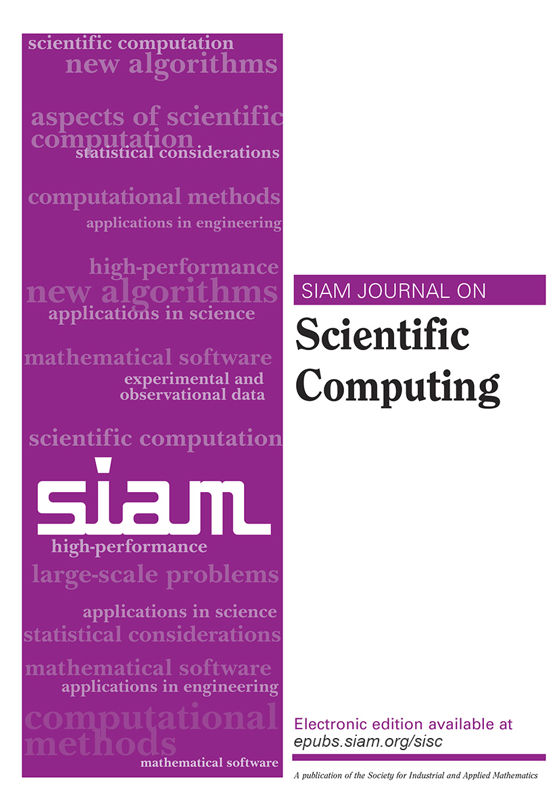

Highlighted Topics
- Asynchronous iterative solvers
- Mixed precision iterative solvers
- Randomized iterative solvers and preconditioners
- Eigenvalue and singular value methods and applications
- Solvers at extreme scale & on next gen/accelerator node architectures
- Iterative solvers and machine learning
- Iterative solvers in data science and engineering
- Iterative solvers and Quantum computing
- Multilevel solvers
- Multigrid methods for partially structured grids
- Rank-structured solvers and preconditioners
- Robust & scalable iterative solution of coupled multi-physics problems
- Solvers for indefinite systems
- Iterative Applications: earth and energy systems
- Iterative Applications: fluids, electromagnetics, plasmas
- Iterative Applications: imaging
- Optimization of complex problems & Systems
- Inverse problems, regularization
- Surrogate modeling & model reduction
- Uncertainty quantification, PDEs with random data
Conference Format
The {{info.year}} conference will be an in-person conference, with no virtual or hybrid component.
The daily schedule will involve five days of parallel sessions.
Code of Conduct
The conference organizers are committed to maintaining the highest standards of professional conduct and providing an environment that is welcoming to all participants. We require all participants to value and respect the rights and dignity of others, and to engage in professional and respectful discussions. No harassment, exclusionary, or discriminatory behavior will be tolerated, and anyone who engages in such behavior will be removed from the conference platforms (physical and virtual). If you are unfamiliar with expected standards of behavior, we encourage you to consult the code of conducts for our professional societies:
Any participants who wish to report offending behaviour should do so via email to
the conference co-chairs or any member of the Program Committee. All reports will be considered within 24 hours of being sent, by a suitable subcommittee of the Program Committee (chosen to avoid any possible conflicts of interest), and appropriate action taken within that time.
Student Paper Competition
A
student paper competition will be open to
current and recent students attending the conference. In addition, a
special issue devoted to the themes of
the conference will be open to all.
Tutorials
The following tutorials will be offered for the upcoming conference (times are tentative):
- Sunday 10:00-12:00 - TBD
- Sunday 14:00-16:00 - TBD
- Sunday 16:30-18:00 - TBD
- Monday 14:00-15:30 - TBD
Participants intending to attend the Sunday tutorial sessions should be sure to plan their travel to arrive in time.
Journal Special Section on Multigrid Methods
As in previous years, a special section focused on recent advances in iterative methods
is planned for publication in the SIAM Journal on Scientific Computing.
Submissions are encouraged in all
aspects of iterative methods, including this year's highlighted topics.
Attendees and participants of the conference as well as the general
community are invited to submit papers. The papers should meet the
formatting and editorial requirements of SIAM Journal on Scientific
Computing.
Submissions for the special issue will be accepted from
{{deadlines.specialissueopen.date }} until
{{deadlines.specialissue.date}}. Papers will be subject to review
by a guest Editorial Board. Submissions should be made using the ordinary
submission process at
http://sisc.siam.org, with a statement in the cover letter requesting
that the paper be considered for the special issue.

Lift Tickets
Note: there has been a change from previous years as to how you purchase discounted lift tickets. They must be purchased by calling Copper at 866-837-2996 at least one day in advance! There is no discount for "day of" purchases. The discount tickets are date specific and nonrefundable, but you can change to later dates by calling again before the date of the ticket.
Equipment rentals
Ski and snowboard equipment can be rented from Charter Sports, with a 35% discount for conference participants (direct link). They can be reached at 888-295-9797 if you have questions or need help booking your rentals. Note that attendees can also just walk into the shop and mention that they are with the "CU Math Conference" and receive the group discount.
Getting Here
The conference is held at Copper
Mountain, Colorado, located 75 miles west of Denver just off
interstate I-70 at exit 195.
Denver International Airport (DIA) is the closest major airport.
From there, most attendees either arrive by shuttle or by car rental.
Summit Express provides shuttle service from DIA to Copper Mountain.
The conference group code is ITERATIVE (direct
link). The code provides 10% off the shared shuttle service.
The full rates are given on the Summit
Express website.
Mountain Shuttle also provides shuttle service from DIA to Copper Mountain, but does not provide a conference discount. Note that prices for both companies do vary, and there are some differences in schedules to consider when booking.
{% block extrajs %}
{% endblock %}
{% endblock %}